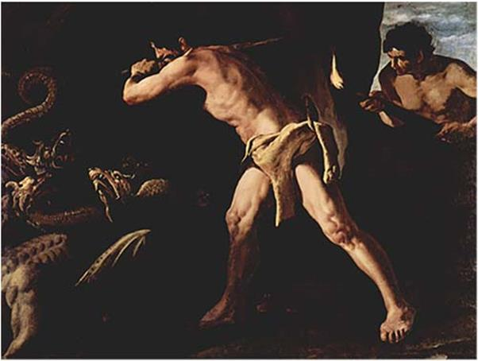

Sau chiến công đầu tiên của Héraclès, Eurysthée lại ra lệnh cho chàng phải lên đường dấn thân vào một thử thách còn nặng nề và nguy hiểm gấp bội phần thử thách đầu tiên: đến vùng Lerne giết con mãng xà Hydre. Đây cũng lại là một quái vật con của Typhon và Échidna, một con rắn khổng lồ đã thành tinh có tới một trăm cái đầu, sống ở vùng Lerne trên bán đảo Péloponnèse. Mãng xà Hydre này chuyên sống ở vùng đầm lầy giữa các ngọn núi đá. Nó chọn một cái hang sâu làm nơi cư ngụ. Thật không kể xiết những tai họa khủng khiếp mà Hydre đã gieo xuống đời sống nhân dân quanh vùng. Trước hết hãy nói về hơi thở của con quái vật này. Đó là hơi thở của một trăm cái đầu to lớn với những cái miệng rộng như cái nong, cái nia, vì thế ta chỉ có thể nói đó là những luồng gió mạnh. Nếu Hydre phồng mang trợn mắt mà phun, mà thổi thì cây cối bị đổ, gẫy, nhà cửa bị bốc bay. Nguy hiểm hơn nữa là trong hơi thở của Hydre có khí độc, ai không may hít phải là chết ngay tức khắc. Vì lẽ đó cho nên ngay cả khi Hydre ngủ cũng không ai dám bén mảng đến gần. Nhân dân quanh vùng Lerne bị Hydre bắt không biết bao nhiêu là bò, ngựa, dê cừu. Cả đến người nữa, không gia đình nào là không có người thiệt mạng. Người ta phải dời chỗ ở nhiều lần tránh xa vùng Hydre để kiếm ăn. Nhưng tránh đâu cho thoát, Hydre bò rất nhanh, quăng mình đi vun vút như ta quăng ném một hòn đá.
Héraclès cùng với Iolaos con của Iphiclès đến vùng Lerne bằng một cỗ xe ngựa. Hai người cho dừng lại ở ngoài vùng đầm lầy rồi len lỏi qua các bờ bãi lau sậy um tùm tìm nơi ở của con quái vật. Việc tìm kiếm quái vật tuy vất vả song không đến nỗi kéo dài vì hơi thở tanh tưởi của Hydre là một dấu hiệu chắc chắn nhất báo cho biết sào huyệt của nó đã không còn xa. Sau khi xem xét cẩn thận nơi ở của quái vật, Héraclès thấy muốn diệt được nó trước hết phải điệu nó ra khỏi vùng đầm lầy. Chàng cùng với Iolaos dùng kế khiêu khích Hydre. Iolaos đốt nóng những mũi tên cho Héraclès bắn vào quái vật, bắn liên tiếp hết mũi tên này đến mũi tên khác. Hydre thấy động liền ngóc đầu dậy đi tìm địch thủ. Trúng kế của người anh hùng, quái vật bò ra khỏi vùng đầm lấy, quấn mình đuổi theo hai người. Cuộc chiến đấu giữa Héraclès với Hydre thật gay go vô cùng. Hydre vươn thân ra quấn lấy Héraclès định thắt, xiết cho Héraclès chết. Nhưng Héraclès nhanh chóng chuồi ra khỏi vòng cuốn của nó, vung chùy lên giáng vào đầu nó. Mỗi đòn chùy giáng vào một cái đầu của Hydre tưởng là một đòn kết liễu và chỉ cần một trăm đòn thì một trăm cái đầu của Hydre vụn tan như cám. Song không phải như thế, Hydre không phải là một con mãng xà thường: cứ mỗi cái đầu bị đập bẹp, vỡ tan, thì tức khắc một cái đầu khác lại mọc ra thay thế. Cũng cần phải nói tới sự giúp đỡ của các vị thần nên Héraclès mới không bị trúng độc. Không thể đánh nhau với Hydre theo cách ấy được nữa. Héraclès gọi người cháu trai là Iolaos đến giúp sức. Chàng ra lệnh cho Iolaos đốt lên một ngọn đuốc, lửa cháy bừng bừng. Cứ mỗi cái đầu của Hydre bị chàng đập bẹp thì Iolaos phải lập tức gí ngay đuốc lửa vào đốt luôn để cho không một cái đầu nào mọc tiếp, kịp thời được nữa. Cứ thế lần lượt, Héraclès hạ gần hết trăm đầu con mãng xà. Nữ thần Héra thấy con quái vật của mình bị yếu thế, sắp đi theo số phận con sư tử Némée bèn sai một con tôm hùm rất lớn từ dưới vùng đầm lầy lên cứu viện cho Hydre: Con tôm hùm bò lên vừa lúc Héraclès không đề phòng đã cắp vào ngón chân chàng định giật mạnh cho chàng ngã. Bị đau, Héraclès giật mình quay lại, tiện tay giáng xuống một chùy. Con vật vỡ tan ra từng mảnh. Các đầu của Hydre lần lượt bị đánh bẹp. Chỉ còn lại một cái đầu lớn nhất ở chính giữa thân là không sao trị được vì lẽ nó vốn bất tử. Héraclès dùng gươm. Bị chém lìa khỏi thân mà mắt nó vẫn mở trừng trừng, miệng phun ra hơi độc phì phì. Héraclès bèn đào một cái hố sâu rồi hất nó xuống đấy, đoạn chàng vác một tảng đá lớn đè chặn lên trên. Chỉ có làm như vậy thì nó mới không thể sống lại được nữa. Trước khi ra về, Héraclès đem nhúng những mũi tên của mình vào máu của con mãng xà. Từ đó trở đi những mũi tên của Héraclès lại ác hiểm thêm một bậc nữa. Kẻ nào bị trúng tên thì không phương thuốc nào cứu khỏi cái chết. Thế là người anh hùng Héraclès đã hoàn thành một chiến công vĩ đại nữa.

Ngày nay, trong văn học thế giới cái tên Hydre158 có một nghĩa bóng, chỉ một tai họa, một tệ nạn nào cứ tái diễn đi tái diễn lại trong đời sống xã hội, xóa bỏ, thanh trừ rồi lại nảy sinh lắp đi lắp lại giống như đầu của con mãng xà Hydre bị đánh bẹp lại mọc ra chiếc khác.159
[158] Ngày nay Hydre trở thành danh từ chung chỉ một loài sinh vật ở nước ngọt không có xương sống. Tiếng Hy Lạp hudra, từ hudor: nước.
[159] Có chuyện kể Hydre có bảy đầu hoặc chín đầu, chặt một đầu thì hai đầu khác lại mọc ra thay thế.